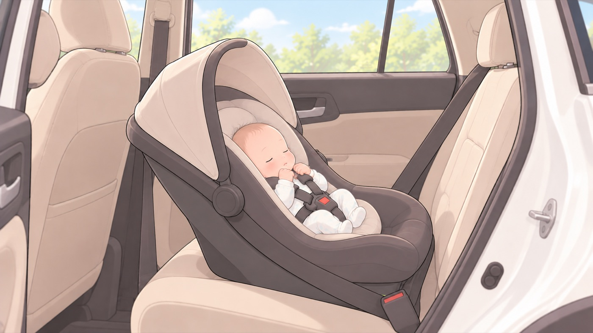

退院の日に要る
退院の日に使うチャイルドシート
赤ちゃんが初めて車に乗るのは退院の日になる。それまでに買って、取り付けておく
母子健康手帳には、退院して自宅に初めて帰るときから使えるよう、出産前から準備しておくと書かれています。新生児は首がすわっていないため、進行方向に対して後ろ向きで背中全体を支える形が原則です。6歳未満の子どもを乗せて運転するときは、使用が義務づけられています。

- すること：新生児から使えるものを、出産前に買う
乳児用シートは体重10kg未満、身長70cm以下が対象で、新生児から1歳くらいまで使えます。退院の日が最初の使用日になります。 - すること：後ろ向きに取り付ける
新生児は頭が大きく、背中や首が未発達で、頭を自分で支えられません。後ろ向きにして、背中全体で受け止める形が安全です。 - すること：後部座席に取り付ける
母子健康手帳にも、できるだけ後部座席に固定すると書かれています。 - すること：背もたれの角度を、水平面に対して約45度にする
倒しすぎても起こしすぎてもいけません。内閣府のマニュアルは、角度の調整が適切でないことを誤使用のひとつに挙げていて、理想の角度を水平面に対して約45度としています。 - しないこと：エアバッグのある助手席に、後ろ向きで取り付けない
衝突でエアバッグが開くと、その勢いでチャイルドシートが跳ね飛ばされ、乳児が亡くなる場合があります。やむを得ず助手席に付けるなら、座席を一番後ろまで下げます。 - すること：新生児のうちは、移動を必要最小限の距離にする
乳児用シートを使っていても、保護者が赤ちゃんの状態を見守りながら、短い距離にとどめます。
2,500g未満で生まれる見込みがあるとき
低出生体重児（およそ2,500g以下）は、座らせることで呼吸障害を起こす場合があります。 チャイルドシートを使ってよいかを、医師に確認してから使います。 また、出生体重が2,500g未満のときは、出生後に市町村へ届け出ることが法律で義務づけられています。
🛍 グッズの選び方
PR- 新生児から使うなら、後ろ向きで寝かせられる角度になるものを選びます。
- ISOFIX車体に埋め込まれた金具へチャイルドシートを直接つなぐ固定方式。シートベルトで留めるより取り付けミスが起きにくい。で固定するものは、シートベルトで締めるより取り付けの誤りが起きにくいです。車側の対応を確かめてから選びます。
- 回転するタイプは、後ろ向きのまま横を向けて乗せ降ろしができるので、新生児を抱えたまま奥へ入れずに済みます。
- コンビ クルムーヴ ロング R129（新生児〜10才頃・回転式ISOFIX）新生児〜10才頃。長く使えるAmazonで見る →（新しいタブで開きます）
- アップリカ クルリラエックスプラス（ISOFIX）ISOFIX。回転して乗せ降ろししやすいAmazonで見る →（新しいタブで開きます）
- Joie アイ・アーク360° ISOFIX固定（0か月〜4歳頃・回転式）0か月〜4歳頃。回転式Amazonで見る →（新しいタブで開きます）
リンクはAmazonアソシエイトリンクです。当サイトはアフィリエイトプログラムに参加しています。Amazonのアソシエイトとして、当サイトは適格販売により収入を得ています。 選び方の方針
この項目の根拠
- 母子健康手帳 任意様式「事故の予防」（こども家庭庁 母子健康手帳情報支援サイト・PDF）（新しいタブで開きます）
医療機関で生まれた赤ちゃんが退院して自宅に初めて帰るとき（生まれて初めて車に乗るとき）から使用できるよう、国の安全基準に適合したチャイルドシートを出産前から準備しておくこと。チャイルドシートはできるだけ後部座席に固定すること。 - 子供を守るチャイルドシート（警察庁）（新しいタブで開きます）
自動車の運転者は、チャイルドシートを使用しない6歳未満の幼児を乗せて運転してはならないと定められていること。 - チャイルドシートの着用指導マニュアル（内閣府・PDF）（新しいタブで開きます）
新生児は頭が大きく背中や首が未発達で頭を保持できないこと、産道をくぐり抜けられるよう肩に柔軟性があること、骨盤が小さく骨突起が完成していないこと、これらの特徴から後ろ向きに使用するチャイルドシートで背面拘束することが安全であること、新生児・乳児期の乗車中の拘束は後ろ向きの背面拘束が原則であること、生まれたばかりの新生児を車で移動させる場合は保護者が状態を見守りながら必要最小限の距離にすること、未熟児・低出生体重児（約2,500g以下）に限っては座らせることで呼吸障害を起こす場合があるので医師の指示に従うこと。 - チャイルドシートの着用指導マニュアル 3（内閣府・PDF）（新しいタブで開きます）
乳児用シートの主な誤使用のひとつとしてリクライニング角度の調整が不適切であることが挙げられ、理想の角度は水平面に対して約45度とされていること。シートベルトで固定する際にしっかり締め付けないとぐらつきが生じること。エアバッグ付き助手席での後ろ向き使用は、衝突でエアバッグが展開した際に乳児用シートの背もたれを跳ね上げて乳児ごと座席に激突するため大変危険であること。 - 母子健康手帳 任意様式「新生児（生後約４週間までの赤ちゃん）」（こども家庭庁 母子健康手帳情報支援サイト・PDF）（新しいタブで開きます）
出生体重が2,500g未満の低出生体重児については、出生後に市町村へ届け出ることが法律で義務づけられていること。